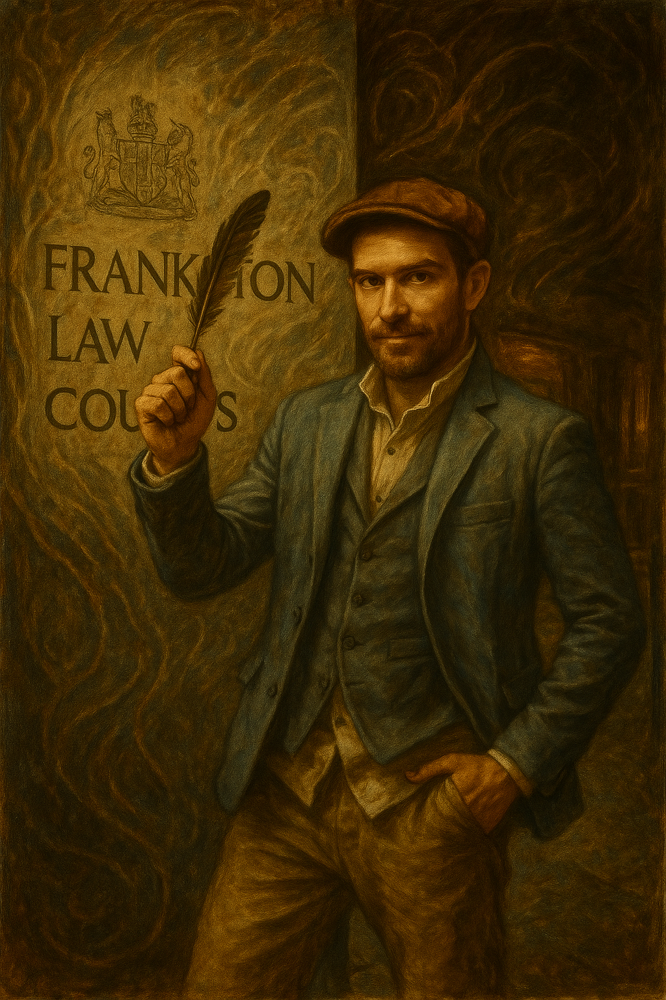

Public imagination
A shareable place for future-facing Frankston ideas: street art, learning tools, print drops, music, workshops and civic storytelling.
Independent proposal · Frankston, Australia
A standalone civic-imagination project for the Blue $nake Studio archive: Frankston as a child-safe, art-rich, locally useful future where schools, libraries, councils, artists and families can build visible proof together.

A shareable place for future-facing Frankston ideas: street art, learning tools, print drops, music, workshops and civic storytelling.
Connects existing live artefacts — Meta-Pet, Teacher Tools, Frankston → Fuji, the Proof Wall and print-ready community work — into one discoverable project.
Written for schools, libraries, councils, disability arts groups, community organisations and collaborators who want practical creative outcomes.
What this page is
Frankston 2035 is not a policy claim or official council plan. It is a Blue $nake Studio project page for organising a local future story: a place where creative education, safe technology, community art and cultural bridge work can be found under one name.
Possible outputs